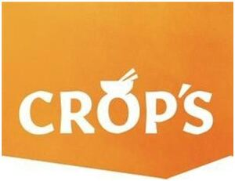

Trade Mark Journal No.2025/041 10 October 2025
WO0000001862979 (29,30)
Office of origin: European Union Intellectual Property Office (EUIPO)
Date of International Registration:28 January 2025
Date of designation in the UK:
28 January 2025

The mark contains the colours orange and white.
International priority date claimed: 29 July 2024
(European Union Intellectual Property Office (EUIPO))
(019060729)
- Class 29
- Prepared meals consisting primarily of meat; prepared meals consisting primarily of bacon; prepared meals consisting primarily of game; prepared meals consisting primarily of fish; prepared meals containing primarily of eggs; prepared meals consisting primarily of seafood; prepared meals consisting primarily of meat substitutes; prepared meals consisting primarily of kebab; prepared vegetable dishes; prepared meals consisting primarily of poultry; soups; vegetable-based entrees; vegetable-based snack food; soup cubes; soup concentrates; broth; falafel; vegetarian burgers; frozen meals consisting primarily of vegetables; frozen meals consisting primarily of poultry; frozen meals consisting primarily of fish; frozen meals consisting primarily of meat.
- Class 30
- Pasta-based ready cooked meals; rice-based prepared meals; noodle-based prepared meals; meals consisting primarily of pasta; prepared meals in the form of pizzas; pastry stuffed with vegetables; pastries consisting of vegetables and poultry, meat or fish; thin breadsticks; quinoa pasta; quinoa, processed; frozen meals consisting primarily of pasta; frozen meals consisting primarily of rice.
CROP'S N.V.
Representative: KOB NV, President Kennedypark 31c, B-8500 Kortrijk, BELGIUM